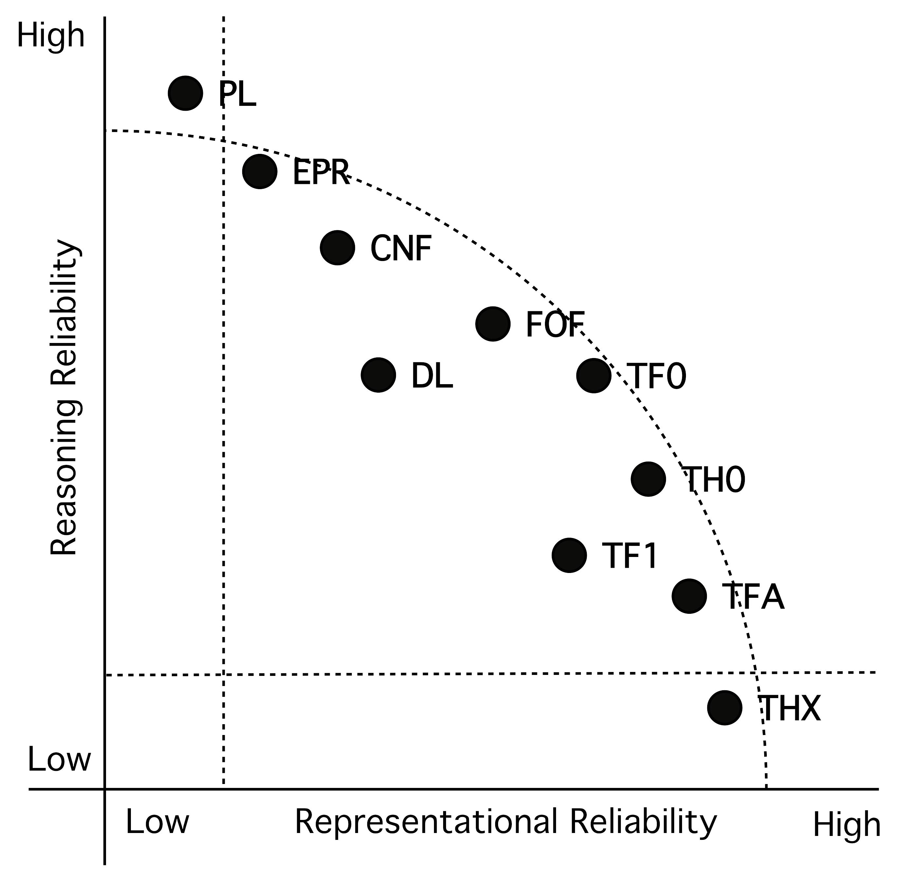

Conclusion

A Trade-off
- Judgements based on facts and experience
- Trade-off representational and reasoning reliability
- Representational reliability is fixed
- Reasoning reliability improves
The Sweet Spot
- Not just the longest vector - extremes not useful
- Improving reasoning reliability matters
- Now ... TF0, Future ... TFA?
- Moral of the story ...
QSD - Hoping for the Truth